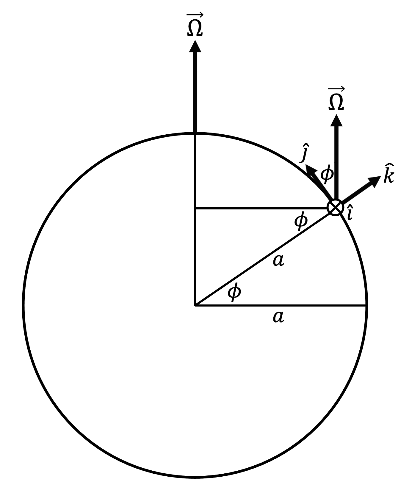

Section 5.2 Expanding the Coriolis acceleration
As discussed in Appendix A and shown its Figure A.2.1 and Figure A.2.2, Earth’s angular velocity \(\vec{\Omega}\) is directed parallel to Earth’s axis of rotation, pointing upward toward the North Pole. Every point on Earth and within Earth’s atmosphere is imbued with this same angular velocity. At the North Pole, \(\vec{\Omega}\) points in the \(\hat{k}\) direction, while at the South pole, \(\vec{\Omega}\) points in the \(-\hat{k}\) direction. At the Equator, \(\vec{\Omega}\) points in the \(\hat{j}\) direction. At any other location on Earth’s surface or within its atmosphere, \(\vec{\Omega}\) points partially in the \(\hat{j}\) direction and partially in the \(\hat{k}\) direction, as shown in Figure 5.2.1 below.

\begin{equation}
\vec{\Omega}
=
\Omega \cos{\phi} \, \hat{j}
+ \Omega \sin{\phi} \, \hat{k}\tag{5.2.1}
\end{equation}
Consequently, the Coriolis acceleration expands as follows in spherical coordinates:
\begin{equation}
\vec{a}_{COR}
=
-2 \, \vec{\Omega} \times \vec{u}
=
\left(
2 \Omega v \sin{\phi} - 2 \Omega w \cos{\phi}
\right) \, \hat{i}
- 2 \Omega u \sin{\phi} \, \hat{j}
+ 2 \Omega u \cos{\phi} \, \hat{k}\tag{5.2.2}
\end{equation}
As we will see in Chapter 8, the terms in (5.2.2) with \(\sin{\phi}\) tend to be much larger than the terms with \(\cos{\phi}\text{.}\) Taking advantage of the dominance of the \(\sin{\phi}\) terms, we define the Coriolis parameter
\begin{equation}
f = 2 \Omega \sin{\phi}\tag{5.2.3}
\end{equation}
\begin{equation}
\vec{a}_{COR}
=
-2 \, \vec{\Omega} \times \vec{u}
=
\left(
fv - 2 \Omega w \cos{\phi}
\right) \, \hat{i}
- fu \, \hat{j}
+ 2 \Omega u \cos{\phi} \, \hat{k}\tag{5.2.4}
\end{equation}